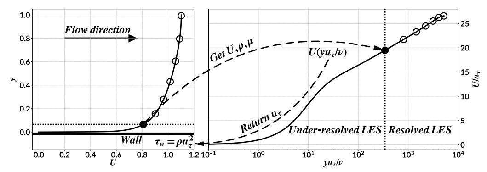
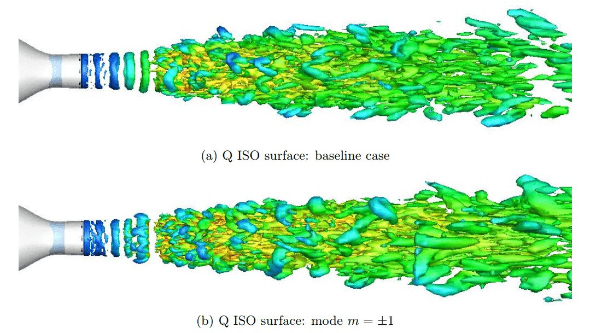
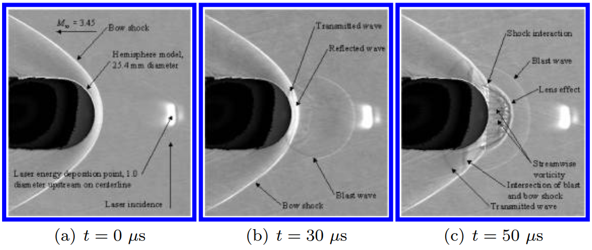

PhD, in Thermophysics, Northwestern Polytechnic University, Xi’an
Status: 6th year of Ph.D. | Advisor: Prof. Hong Yan
Research Topic: Shock wave/turbulent boundary layer interaction, Wall modeled LES, High-order numerical schemes, Flux reconstruction
Bachelor in Aeroengine; Northwestern Polytechnic University, Xi’an
Thesis: “Numerical study on the stability of 2D incompressible flow” | Advisor: Prof. Hong Yan
I’m developing a code based on the flux reconstruction method and will use it to simulate the shock wave/turbulent boundary layer interaction. The code is called NFS. NFS is written in Fortran with useful programming features including OOP. Based on unstructured linear and high order meshes, NFS maintains a good scalability performance. 90% strong scalability using up to 2400 CPU cores. It is validated using various test cases, including the turbulent channel flow, double mach reflection, strong shock vortex interaction and others. Various shock sensors and limiters including various WENO limiters are implemented. An inflow turbulence generation BC is implemented using the digital filter approach. Due to my limited time, I focus on the feature required to do simulation of the SWBLI. The running speed and the scalability performance could be improved. A website showing details of NFS will be released soon.
Check the publication list.

I studied the wall-stress approach for wall modelled LES using the flux reconstruction method. The wall-stress approach simply uses the wall-stress to model the dynamics near the wall. The fluid dynamics from the wall to a location in the log layer is modelled by this wall-stress. Therefore, the stringent requirement on the grid size near the wall is relaxed. The wall-stress is calculated through a wall function/model based on the flow solution at a location. It means that the wall function/model gets input from LES at such location and outputs the wall-stress at the wall. You can simply specify such location to be at the cell interface between the first cell and the second cell in the wall-normal direction. Then you could use a really coarse mesh to conduct your wall-modelled LES but finally get an accurate result. And this location is expected to be valid from the wall up to somewhere in the log-layer. However, my study shows that the location at which LES feeds the wall function/model is affected by the streamwise and spanwise grid resolutions. For details, check my AIAA Journal publication[1].
Through the cases of a generic car mirror and the 30P30N three element airfoil, the high-order FR/CPR method is accurate and efficient in predicting the near-field aero-acoustics associated with turbulent vortices. Check the AIAA conference paper[2] for details.

The capability of thermal actuators to enhance mixing in the supersonic round jets is demonstrated in this AIAA conference paper[3].

An instantaneous laser discharge generates energy deposition upstream of the shock. Experiments show that the blast wave created by the energy deposition interacts with the shock and results in drag reduction on the sphere. Through three independent research groups, it is found that the perfect gas Euler simulations with the assumed initial condition are incapable of accurately predicting the surface pressure and hence the net drag reduction. Check the AIAA conference paper[4] for details.
[1] J. Shi, H. Yan, Z.J. Wang, Flux reconstruction implementation of an algebraic wall model for large-eddy simulation, AIAA Journal. (2020) 1–12. https://doi.org/10.2514/1.j058957.
[2] J. Shi, H. Yan, Z.J. Wang, Towards direct computation of aeroacoustic noise with the high-order FR/CPR method, in: 2018 AIAA/CEAS Aeroacoustics Conference, American Institute of Aeronautics; Astronautics, 2018. https://doi.org/10.2514/6.2018-4095.
[3] J. Shi, H. Yan, G. Bai, K. Lin, Effect of thermal actuator on vortex characteristics in supersonic shear layer, in: 47th AIAA Fluid Dynamics Conference, American Institute of Aeronautics; Astronautics, 2017. https://doi.org/10.2514/6.2017-4307.
[4] M. Mortazavi, D.D. Knight, O.A. Azarova, J. Shi, H. Yan, Numerical simulation of energy deposition in a supersonic flow past a hemisphere, in: 52nd Aerospace Sciences Meeting, American Institute of Aeronautics; Astronautics, 2014. https://doi.org/10.2514/6.2014-0944.